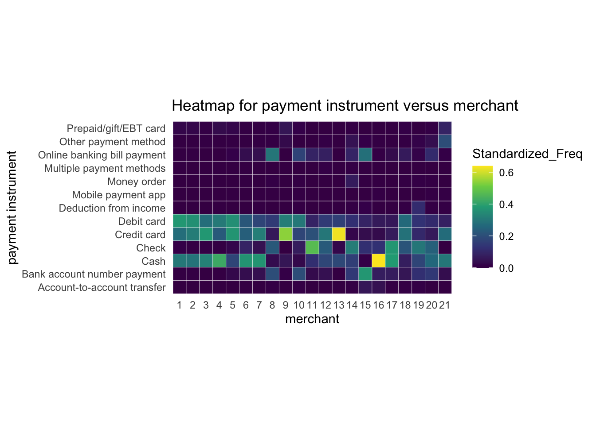
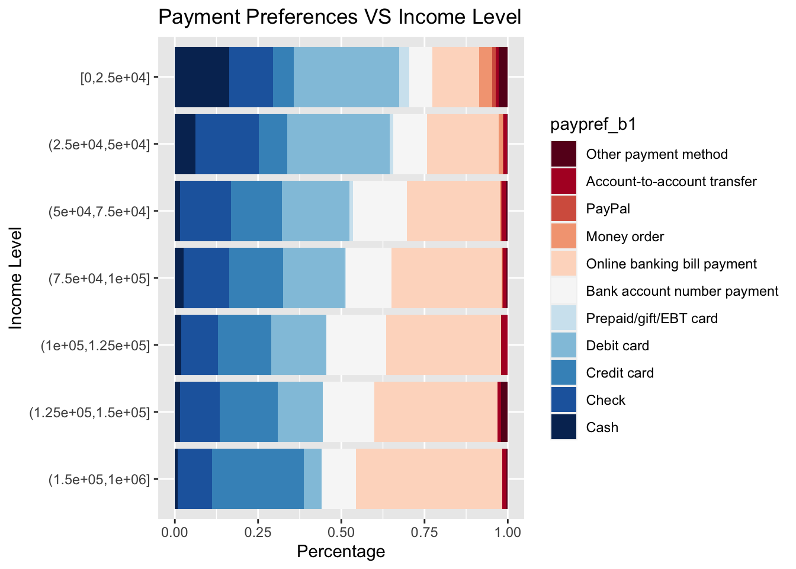
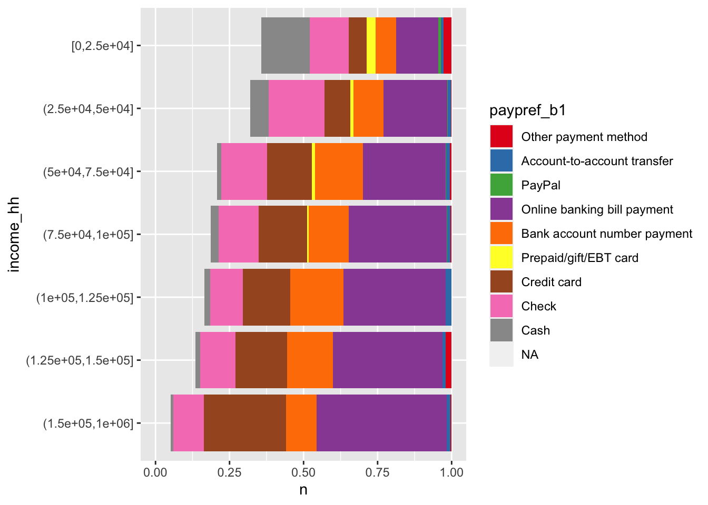
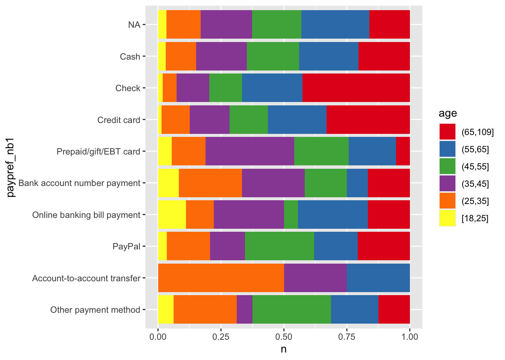
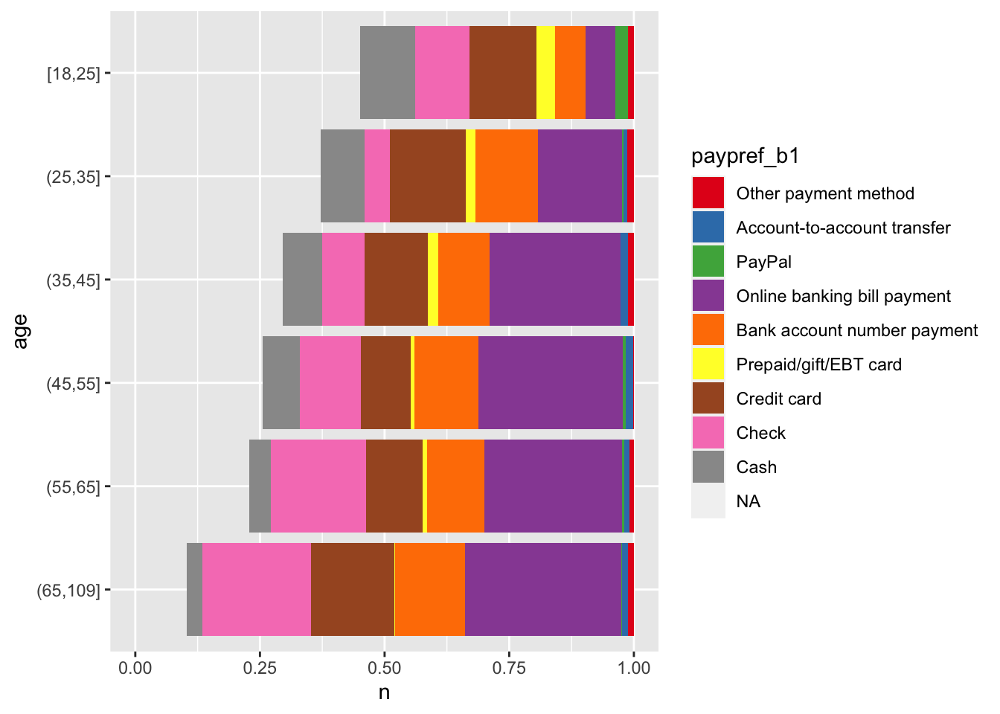
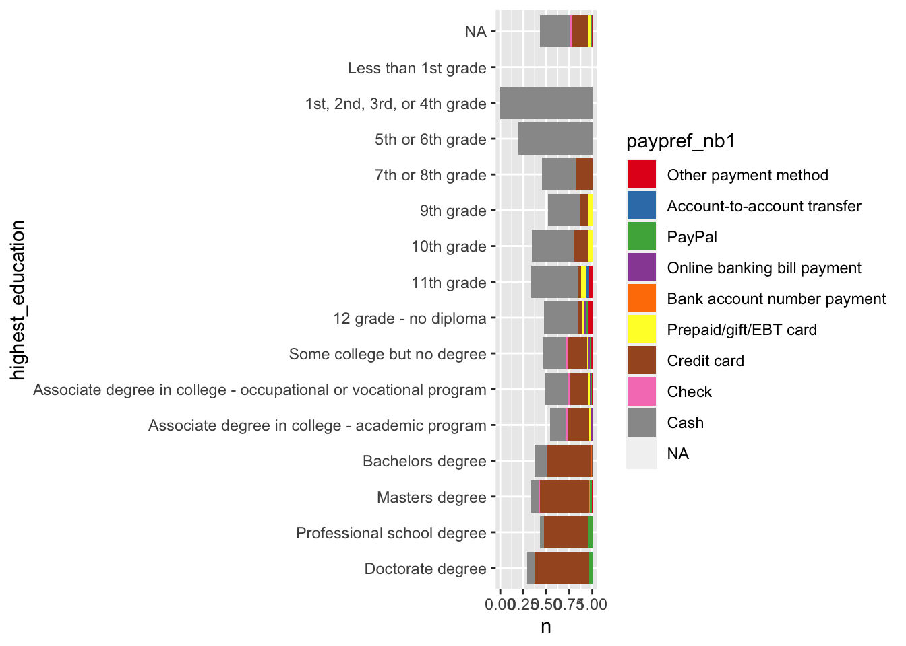

Chapter 5 Results
1 - Grocery stores, convenience stores without gas stations, pharmacies 2 - Gas stations 3 - Sit-down restaurants and bars 4 - Fast food restaurants, coffee shops, cafeterias, food trucks 5 - General merchandise stores, department stores, other stores, online shopping 6 - General services: hair dressers, auto repair, parking lots, laundry or dry cleaning, etc. 7 - Arts, entertainment, recreation 8 - Utilities not paid to the government: electricity, natural gas, water, sewer, trash, heating oil 9 - Taxis, airplanes, delivery 10 - Telephone, internet, cable or satellite tv, video or music streaming services, movie theaters 11 - Building contractors, plumbers, electricians, HVAC, etc. 12 - Professional services: legal, accounting, architectural services; veterinarians; photographers or photo processers 13 - Hotels, motels, RV parks, campsites 14 - Rent for apartments, homes, or other buildings, real estate companies, property managers, etc. 15 - Mortgage companies, credit card companies, banks, insurance companies, stock brokers, IRA funds, mutual funds, credit unions, sending remittances 16 - Can be a gift or repayment to a family member, friend, or co-worker. Can be a payment to somebody who did a small job for you. 17 - Charitable or religious donations 18 - Hospital, doctor, dentist, nursing homes, etc. 19 - Government taxes or fees 20 - Schools, colleges, childcare centers 21 - Public transportation and tolls 






Bill payment is the regular reception of compensation for a repeated service, like rent. People with low income tend to use cash, prepaid card or paypal to pay the bills, while people with higher income tend to use credit card or bank account to pay the bills.
People with higher household income tend to use more electrionic payment such as bank account number payment and online banking bill payment to pay the bills. While people with lower household income tend to use more paper instruments such as cash, check and money order to pay the bills. People with higher household income tend to use more payment cards such as debit card and credit card to pay the non-bill payment. While people with lower household income tend to use more paper instruments such as cash, check and money order to pay the non-bill payment.


Younger people like to use cash, debit card, paypal and prepaid/gift/EBT card to pay the bills while older people like to use check, money order, bank account number payment and online banking bill payment.

People with higher education level tend to use more electrionic payment such as bank account number payment and online banking bill payment to pay the bills. While people with lower education level tend to use more paper instruments such as cash, check and money order to pay the bills. People with higher education level tend to use more payment cards such as debit card and credit card to pay the non-bill payment. While people with lower education level tend to use more paper instruments such as cash, check and money order to pay the non-bill payment.